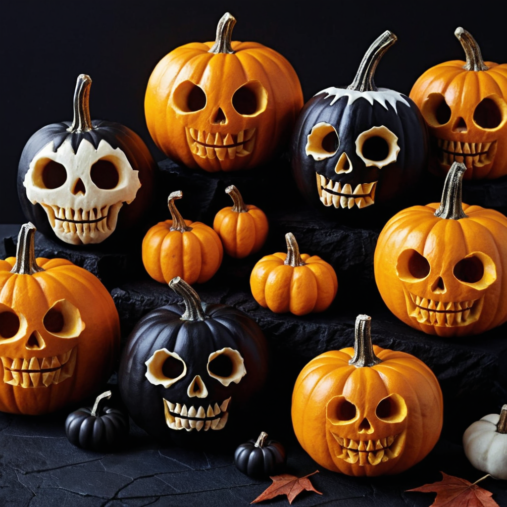
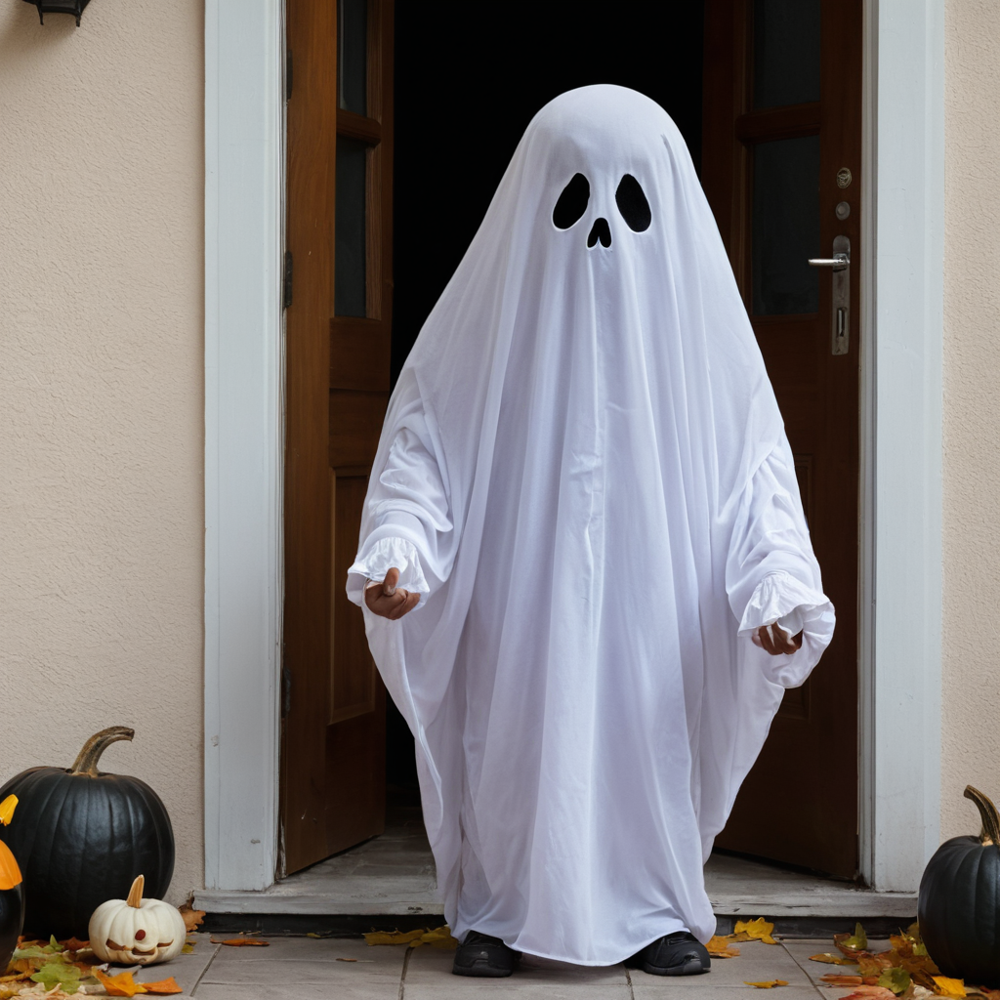
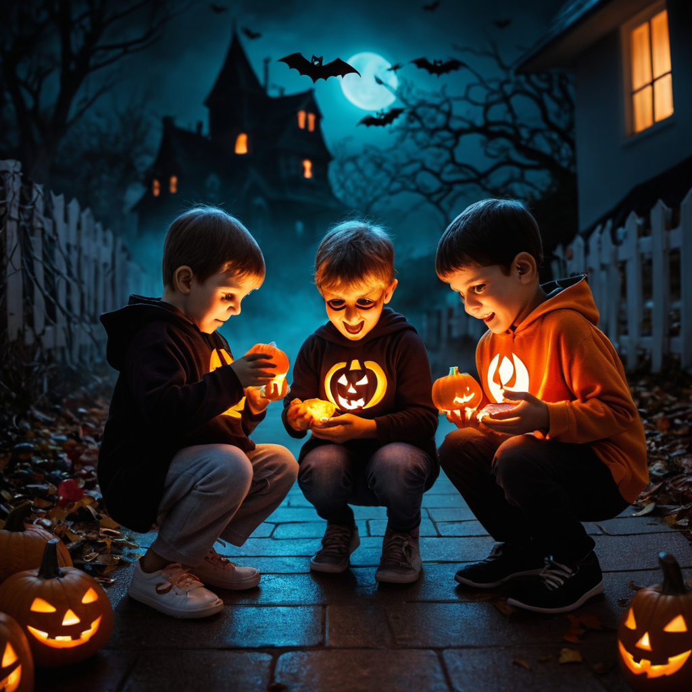
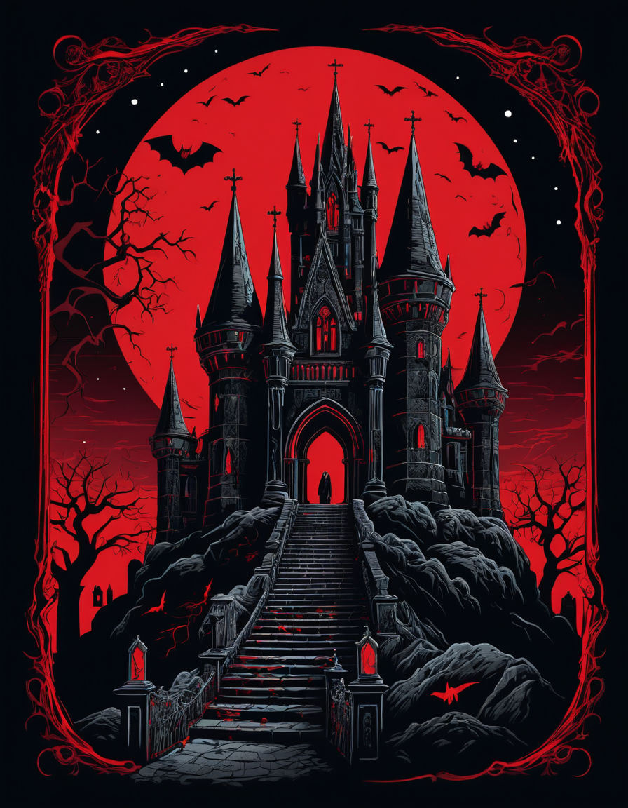

HALLOWEEN
Halloween es una celebración que se lleva a cabo el 31 de octubre, conocida por ser una festividad en la que las personas, especialmente los niños, se disfrazan, decoran sus casas de manera espeluznante y salen a pedir dulces con la frase "truco o trato" (trick-or-treat). Se asocia comúnmente con elementos sobrenaturales, como fantasmas, brujas, vampiros y calabazas talladas, conocidas como "Jack-o'-lanterns".




Ahora, Halloween no seria una festividad tan emocionante si no existieran las autenticas historias de Tim Burton. Quien es un director de cortometrajes y Peliculas escalofriantes y fantasticas con un toque unico con el que ha sido capaz de intimidar a muchos de sus seguidores y espectadores.